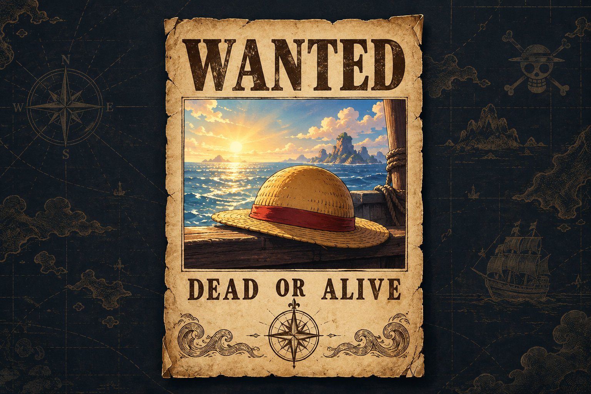

PYTHON & INTEGRATIONS
Connect the moving parts
API connections, data transformations, and service configuration. I work on the paths that move data between applications.
VĂN SƠN · AI ENGINEERING FOCUS
I work across Python services and TypeScript interfaces. My direction is applied AI engineering. And yes, I’m a One Piece fan.
Discover my world ↗
THE ADVENTURE IS YOURS.
STAY CURIOUSA LITTLE WORLD TO GET LOST IN
ISLAND DISCOVERED
Discover three sides of my work and earn your Explorer’s Seal. Progress stays in this browser. You can also read the summary or use the tools below without playing.
THE PERSON BEHIND THE SHIP
PYTHON & INTEGRATIONS
API connections, data transformations, and service configuration. I work on the paths that move data between applications.
TYPESCRIPT & INTERFACES
React applications, dashboards, and multilingual interfaces, with attention to the details people encounter every day.
RELIABILITY & TESTING
Regression tests, timezone handling, and clearer service diagnostics. My AI engineering direction builds on this full-stack foundation.
FEATURED BUILD / THE SUNNY
A public case study of this 3D world: the problem, the choices, the source, and the browser tests. Built with AI assistance.
YOUR EVERYDAY COMPANIONS
A moment to get your bearings.
One thing at a time. You’ve got this.
FOLLOW YOUR COMPASS
No destinations match. Try another search.
Your added destinations stay in this browser.